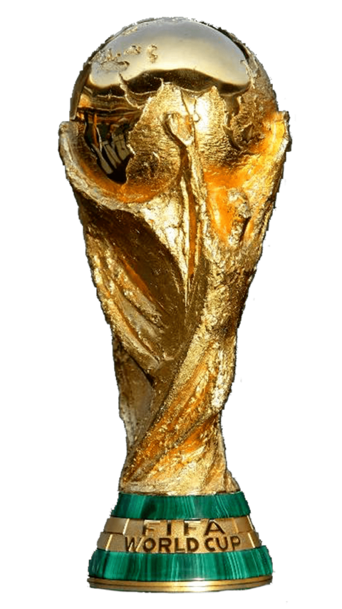

<!--
  Generated template for the WorldCupPage page.

  See http://ionicframework.com/docs/components/#navigation for more info on
  Ionic pages and navigation.
-->
<ion-header>
  <ion-navbar>
    <ion-title>Movies</ion-title>
  </ion-navbar>
</ion-header>

<ion-content adding class ="background">
    <br><br>
    <h3 ion-text color="danger">
    Here are some Classic Football Movies you may like!!
  </h3> 
  
  
   <br><br><br><br>
   <ion-list>
      <ion-item *ngFor="let m of movies">
        <h2>{{m.Title}}</h2>
        <p>{{m.Year}}</p>
        <ion-img height='200' width='200' src="{{m.Poster}}"></ion-img>
      </ion-item>
    </ion-list>
  
  <br><br><br>
 
</ion-content>
